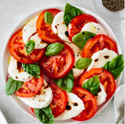

Description:
Flavor Profile: Clean, bright, and balanced. The sweet acidity of ripe summer tomatoes cuts through the creamy, mild richness of fresh mozzarella, while fresh basil adds a peppery, herbal aroma. A drizzle of balsamic glaze provides a sweet, tangy finish. Texture & Feel: Juicy, soft, and contrasting. Slicing through fresh mozzarella offers a tender, melt-in-your-mouth feel that pairs directly against the firm, plump texture of fresh tomatoes. Culinary Context: Originating from the island of Capri in Italy, the dish was created to showcase the colors of the Italian flag (red, white, and green) and relies entirely on using peak-season, raw ingredients.